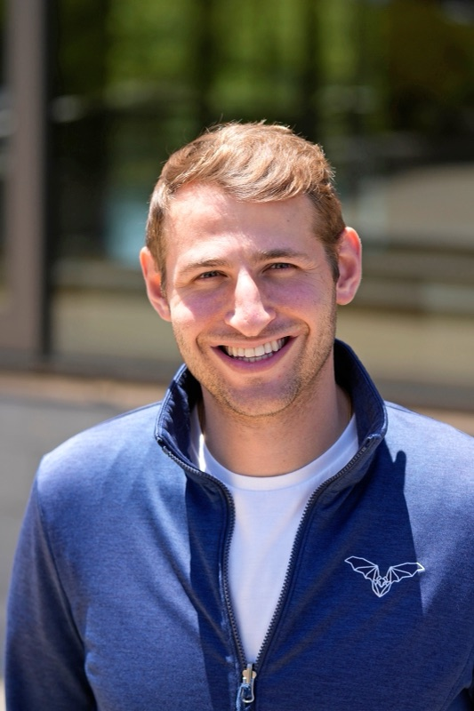

People · Profile

Adam Lowet, Ph.D.
Postdoctoral Researcher · Jane Coffin Childs Fellow
I'm a postdoc who joined the NeuroBatLab in the summer of 2025. I am interested in combining normative/computational models with the impressive behavioral repertoire of the bat to shed light on memory, spatial cognition, and sociality. Outside the lab, I enjoy cooking, basketball and scuba diving.